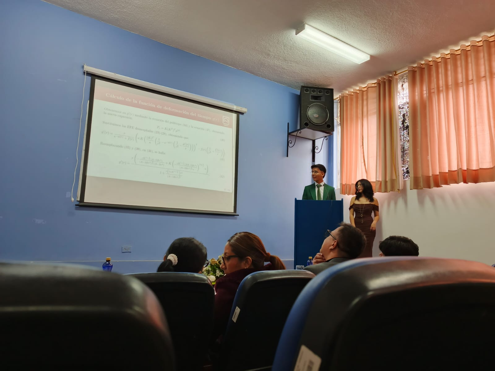
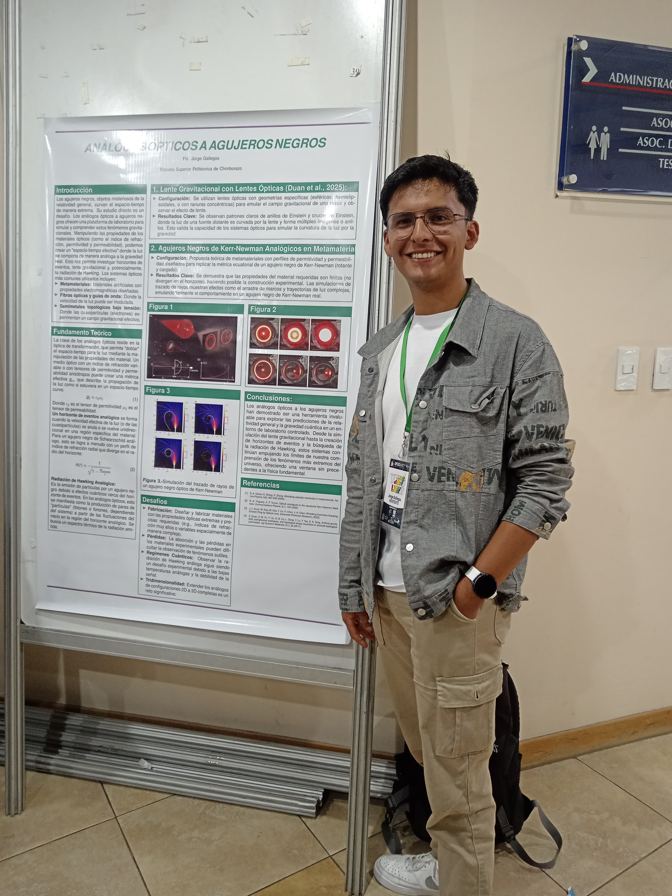
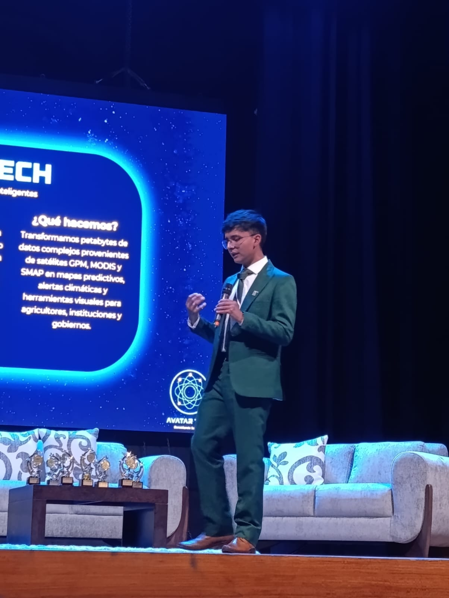
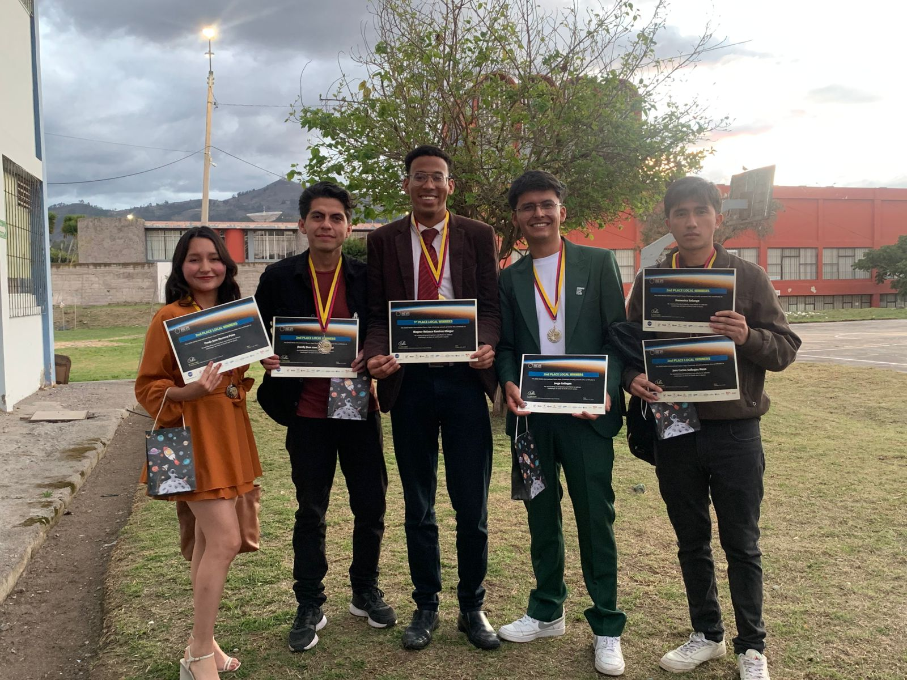
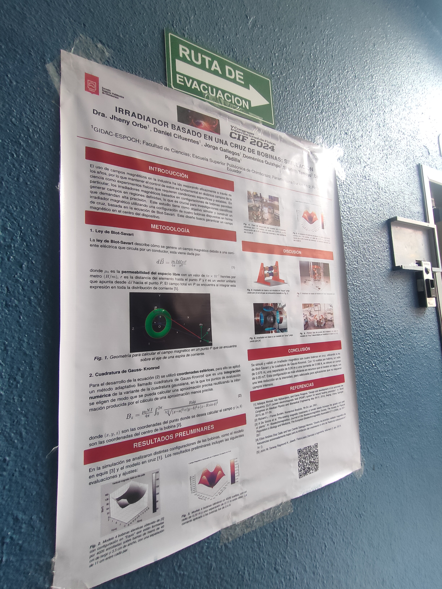
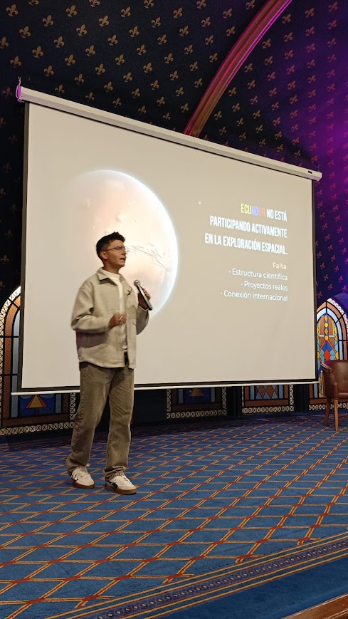

∇
General Relativity
Einstein equations, exact solutions and compact spacetimes.







 FIELD NOTES / RESEARCH & OUTREACH
FIELD NOTES / RESEARCH & OUTREACHPHYSICIST · MSc ASTRONOMY · ELTE · STIPENDIUM HUNGARICUM

MSc Astronomy student at ELTE and Stipendium Hungaricum Scholar. Researching compact objects, gravitational decoupling and computational astrophysics.
01 / EXPERTISE
Einstein equations, exact solutions and compact spacetimes.
Anisotropic matter, stability, causality and energy conditions.
MGD/MGDe methods and additional gravitational sources.
Numerical solvers, simulation, GPU methods and reproducible analysis.
02 / PORTFOLIO
PROJECT / 01
Coupled relativistic fluids, stability, causality and energy exchange.
PROJECT / 02
Finite-element and GPU-based simulations of Helmholtz and crossed-coil configurations.
PROJECT / 03
Satellite-data visualization for climate resilience and education.
PROJECT / 04
Immersive 3D astronomy education using NASA exoplanet data.
03 / HIGHLIGHTS
CURRENT / RESEARCH
CURRENT RESEARCH
Tabulated dense-matter equations of state, PCHIP interpolation, analytic fits and physically validated stellar-structure workflows.
CURRENT RESEARCH
Exploratory work on the feasibility of time-dependent and rotating gravitational-decoupling frameworks; no new formalism claimed as established.
RECOGNITION
2026 — PRESENT
Scholarship supporting MSc Astronomy studies at Eötvös Loránd University, Budapest.
2024 / 2025
Local Winner / Global Nominee in both 2024 and 2025, as listed in the academic CV.